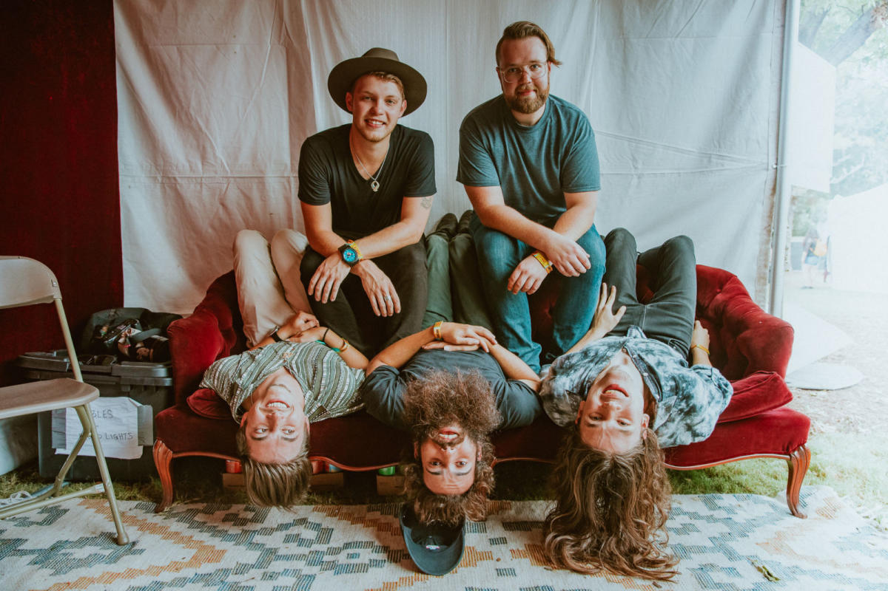
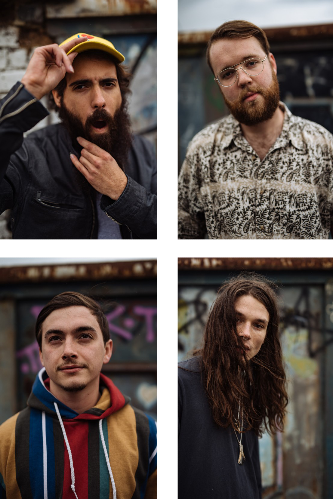

Rainbow Kitten Surprise was formed in 2013 by Sam Melo and Darrick Keller, while they were writing music and composing together, as they attended Appalachian State University. Their first EP, “Mary” was recorded in a dorm room at the university. They later added three new members, Ethan Goodpaster, Jess Haney, and Charlie Holt. RKS independently released its first album, “Seven,” which was later re-released together with the band's first EP as a joint album called “Seven + Mary.” RKS initially recorded its music under the Split Rail Records label, a student run label at Appalachian State University's Hayes School of Music, where three of the band's members attended. From 2014 through 2017, Rainbow Kitten Surprise has performed at multiple music festivals and other events, including Bonnaroo Music and Arts Festival and Austin City Limits Festival.